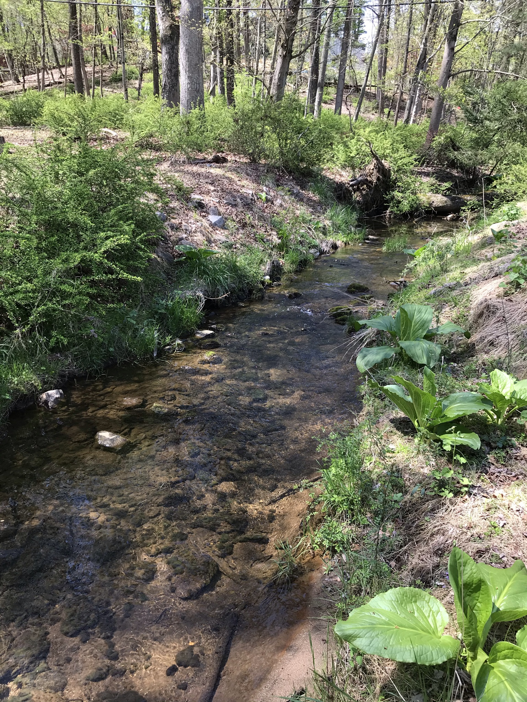
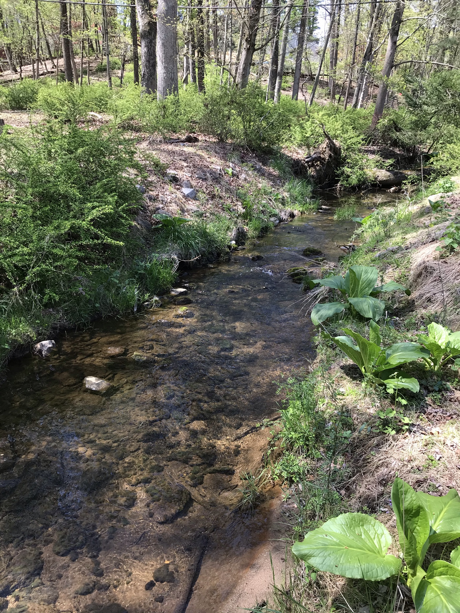

Research
Undergraduate


During my undergraduate career, under the supervisions of Mr. Jonathan Miller and Dr. Brian Helms, I have done a variety of projects on crayfish, mussels, and benthic macroinvertebrates. My past research sparked my interest in freshwater ecology.
Graduate


I am currently a second year Master's student in the Department of Biological Sciences at Towson University, Towson, MD. Under the supervision of Dr. Susan E. Gresens and in collaboration with the Baltimore County Department of Environmental Protection and Sustainability, my research seeks to understand how intense urban development in the past decades impact Red Run watershed, a former trout watershed.
 

My MS thesis consists of three chapters/parts: (1) Red Run from 1987 to 2009; (2) Red Run after 2009; (3) Climate change impacts on stream hydrology.
If you would like to check out my work in more details, feel free to pay my RPubs a visit. RPubs is where I usually publish my analysis results. Analyses are still ongoing for part 2 and 3, so stay tuned!
RPubs: Nguyen Tien Anh Quach